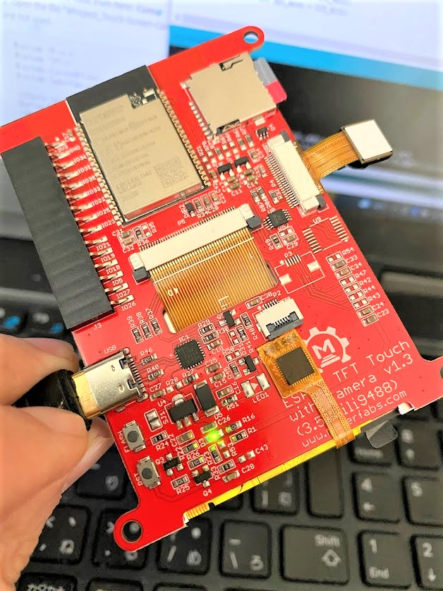
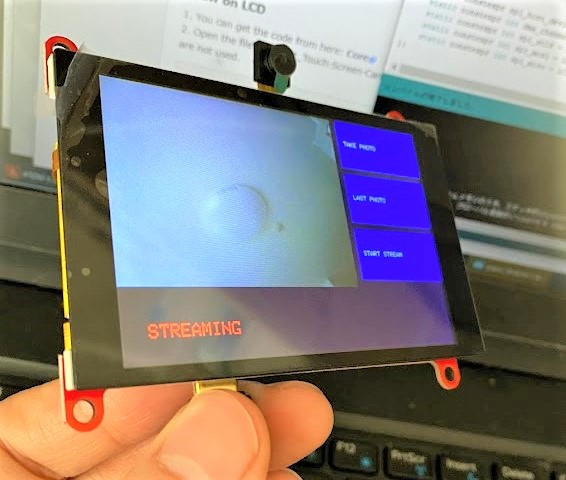
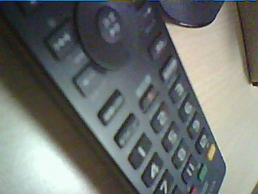

この記事はMakerfabsの提供でお届けします。
今回紹介するESP32 3.5" TFT Touch(Capacitive) with CameraはMakerfabsから提供いただいたものです。
（ですが、ESP32 3.5" TFT Touch(Capacitive) with Cameraをレビューしたい！と言ったのは自分なので、Makerfabsが無理やりこの商品を押しているわけではなく、inajobの一押しアイテム！、という感じです。）
ESP32 3.5" TFT Touch(Capacitive) with Cameraとは
ESP32 3.5" TFT Touch(Capacitive) with CameraはMakerfabsはオープンソースのESP32を搭載した開発ボードです。
コアとなるマイコンはESP32で以下の機能があります
- ESP32-WROVER-B (技適あり)
- 3.5インチ 320*480 TFT
- 静電容量式タッチパネル
- 2Mピクセルのカメラモジュール
- USB書き込み(USB Type-C)
- MicroSDカードスロット（with 16GB MicroSDカード)
- 15ピンの拡張端子

デフォルトのファームウェアを試してみる
USBケーブルをつなげるとデフォルトのファームウェアが起動します。
これはここにあるデジカメのような動作をするファームウェアのようです。
カメラの内容をリアルタイムにディスプレイに表示し、ボタンをタッチすることで写真をSDカードに保存することが出来ます。

カメラについては最近のスマートフォン比べると明らかに劣りますが、一応写真が取れる、という感じです。 （このファームウェアでは320 * 240の写真しか撮れないようでした。カメラの性能を考えるともっと高解像度の画像も撮影できるはずです。）

自分オリジナルの低画質なデジカメは、このファームウェアをちょっと改造するだけで作れそうです。
見どころ
この商品は、ESP32と320*480のディスプレイ、カメラが搭載された、リーズナブルな開発ボードです。 IoTでこれらの部品を組み合わせたプロトタイピングを行う際に利用できそうです。
WiFiやBluetoothも使うことが出来、今流行りのIoT的なガジェットを作る際も役立ちそうです。ESP32-WROVER-Bは技適も取得しているので、日本でも安心して利用できる点もポイントです。
注意点としては、この製品には充電池は搭載されていないためスタンドアローンのガジェットを作りたいときは電源については別に考える必要があるという点と、カメラの画質はそこまで良くないという点です。
アクリル板を重ねて作ったケースもアドオンで販売されているので、裸で運用するのが怖い人は合わせて購入するのがよさそうです。
アイデア
自分が考えるこのボードで作れそうなアイデアを挙げてみると・・
- 自分オリジナルのデジカメ（キャラクタが映りこむとか、撮影するとWiFiで即座にアップロードされるとか）
- 高解像度を生かしたゲーム（フレームレートを高めるのはコツが必要そう）
- デジタルフォトフレーム
- 電子情報端末（小型パソコンのようなもの）
- スマートセンサーの頭脳と表示装置
という感じです。
自分でボードから設計するとなると相当大変ですが、ESP32 3.5" TFT Touch(Capacitive) with CameraはMakerfabsのような開発ボードを利用することで、ソフトウェア開発だけで実現できます。
まとめ
ESP32と高解像度のディスプレイ、カメラ、と、IoTの実験や、リッチなガジェットのパーツとして利用するのにぴったりな開発ボードである、ESP32 3.5" TFT Touch(Capacitive) with CameraはMakerfabsを紹介しました。
スペックを考えるとかなりお手頃なので、類似したボードを自分で設計する手間を考えると、買わない手は無いです。


関連記事